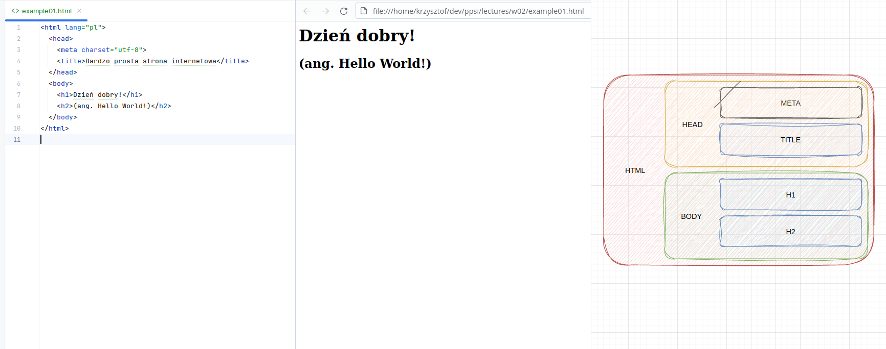
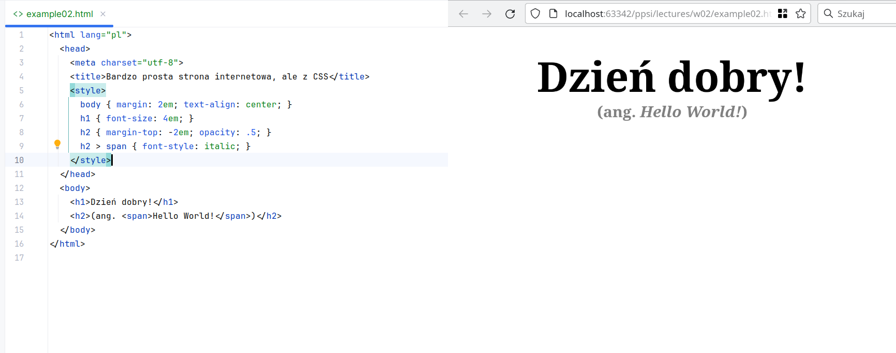
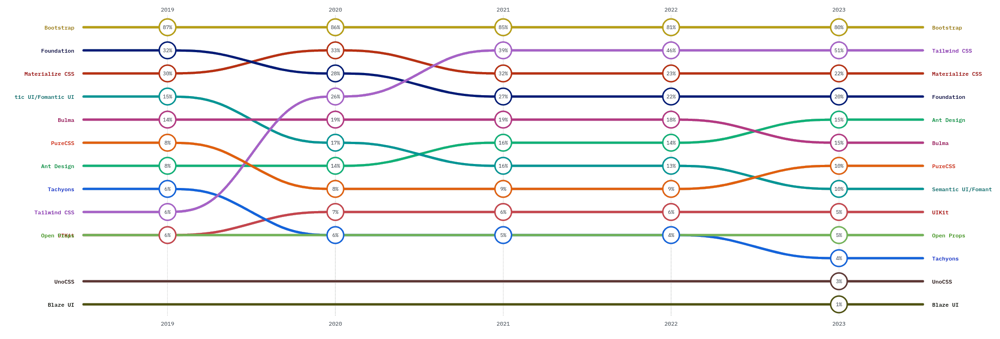
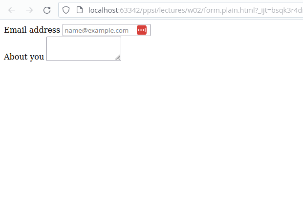
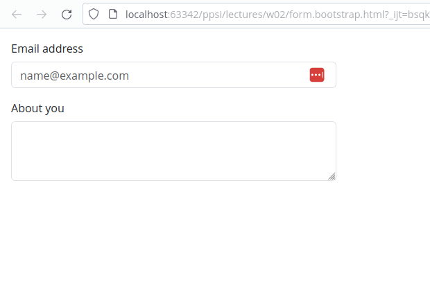
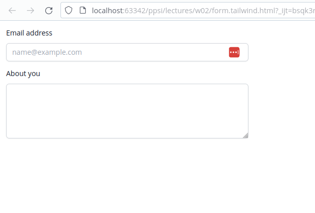
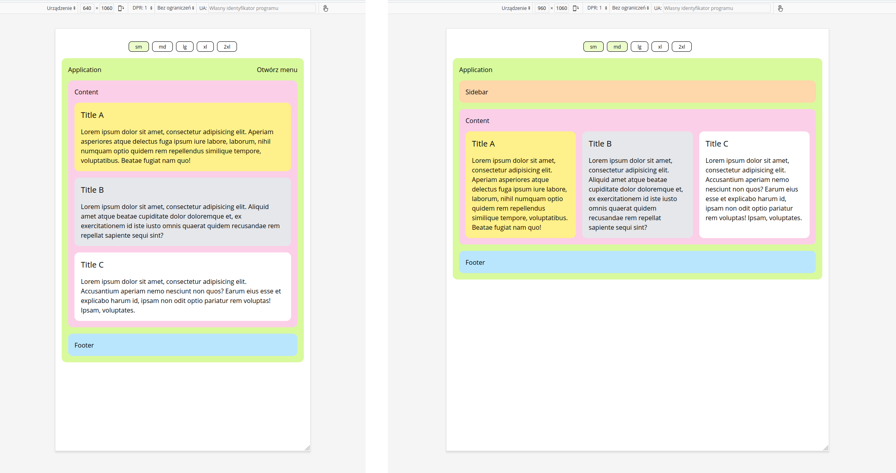

Statyczne strony internetowe
Projektowanie i programowanie systemów internetowych I
wykład 2 z 15

mgr inż. Krzysztof Rewak
Zakład Informatyki, Wydział Nauk Technicznych i Ekonomicznych
Collegium Witelona Uczelnia Państwowa
Blumilk sp. z o.o.
Agenda
- HTML: projektowanie struktury
- CSS: nadawanie wyglądu
- Frameworki: idea i przegląd
- Podsumowanie
Czym nie jest HTML?
HTML przede wszystkim nie jest językiem programowania.
Czym jest HTML?
HTML (HyperText Markup Language) to hipertekstowy język znaczników umożliwiający ustandaryzowane zapisanie struktury strony internetowej.
Za jego pomocą można zbudować podział dokumentu na semantyczne sekcje, ale nie udostępnia praktycznie żadnych funkcji programistycznych znanych z klasycznych języków programowania takich jak deklarowanie zmiennych i przypisywanie im wartości, pętle czy wyrażenia warunkowe.
Niewątpliwą zaletą HTML jest to, że może być edytowany w dowolnym edytorze tekstu, a do jego uruchomienia wystarczy przeglądrka.
Nawet statyczne pliki
*.html można uruchomić lokalnie przez wstukanie do niej ścieżki do tegoż pliku.

bardzo prosta strona internetowa: kod, render i schemat
Budowa domykanego tagu HTML
<nazwa [atrybut-n="wartość-n"]n>slot</nazwa>
Każdy domykany tag HTML:
- musi mieć nazwę w tagu otwierającym
- może mieć dowolną liczbę atrybutów z wartościami
- może mieć dowolną wartość wpisaną w slot
- w slocie można wpisać inne tagi HTML
- jeżeli slot jest pusty, można go domknąć slashem
<span class="font-bold text-xl" id="hello" title="Hello message">
Hello there!
</span>
Przykładowo:
- nazwą tagu tutaj jest
span - tag ma trzy atrybuty:
- listę klas
classz wartościąfont-bold text-xl - identyfikator
idz wartościąhello - tytuł
titlez wartościąHello message
- listę klas
- w slocie zawartością jest napis
Hello there!
Wyrenderowana zostanie oczywiście tylko fraza Hello there!, ale pozostałe informacje są istotne dla silnika przeglądarki, który do tego szkieletu może dodać reguły CSS lub skrypty JS.
Budowa niedomykanego tagu HTML
<nazwa [atrybut-n="wartość-n"]n>
Każdy niedomykany tag HTML:
- musi mieć nazwę w tagu otwierającym
- może mieć dowolną liczbę atrybutów z wartościami
- nie może mieć żadnej wartości wpisanej w slot
<img src="./logo.png" class="w-72" alt="Logo">
Przykładowo:
- nazwą tagu tutaj jest
img - tag ma trzy atrybuty:
- źródło obrazka
srcz wartością./logo.png - listę klas
classz wartościąw-72 - alternatywny tekst
titlez wartościąLogo
- źródło obrazka
Wyrenderowany zostanie oczywiście tylko obrazek (lub napis Logo jeżeli obrazka nie można pobrać), ale pozostałe informacje ponownie są istotne dla silnika przeglądarki, który do tego szkieletu może dodać reguły CSS lub skrypty JS.
Każdy tag ma zestaw dostępnych do wykorzystania atrybutów. Przykładowo
src może określić źródło obrazka w img lub adres URL załączanej strony w iframe, ale dodane do span nie za wiele zrobi.
Niektóre atrybuty - jak identyfikator
id, zestaw klas class czy stylowanie style - są domyślnie dostępne we wszystkich tagach.
Hiperłącza <a>
<a href="https://blumilk.pl/" target="_blank">
Blumilk sp. z o.o.
</a>a to (niegdyś) podstawa sieci www: tworzy linki, które po kliknięciu przenoszą na stronę określoną w href; atrybutem target można sterować zachowaniem przeglądarki po kliknięciu
Kontenery <div>
<div class="flex flex-col lg:flex-row">
<div class="flex-1">1</div>
<div class="flex-1 flex">
<div class="flex-1">2</div>
<div class="flex-1">3</div>
</div>
</div>div to podstawa szkieletu stron www: to kontener, który można ostylować i do którego można włożyć kolejne kontenery
Tabele <table>
<table class="table-auto">
<thead>
<tr>
<th>id</th>
<th>name</th>
<th></th>
</tr>
</thead>
<tbody>
<tr>
<td>1</td>
<td>Jan Kowalski</td>
<td>
<button (...)>
</td>
</tr>
</tbody>
</table>table służy do tworzenia tabel... i tylko tabel!
Formularze <form> i <input>
<form method="post">
<input type="text" name="name">
<input type="email" name="email">
<input type="submit" value="Wyślij">
</form>form zbiera pola formularza input
Czym jest CSS?
CSS (Cascading Style Sheets, kaskadowe arkusze stylów) to kolejny język znaczników, tym razem wspomagający budowanie wizualnej warstwy stron internetowych.
Podstawowa idea to tworzenie reguł, które opiszą wygląd poszczególnych elementów renderowanych przez przeglądarkę.

bardzo prosta strona (ale już ładniejsza) internetowa: kod i render
Budowa reguły CSS
selektor { [atrybut-n: wartość-n;]n }
Każda reguła CSS:
- musi tyczyć się selektora
- może mieć dowolną liczbę atrybutów z wartościami
selektor { ... }
Selektor bez operatora wybiera tagi HTML o zadanej nazwie.
span {} nada styl wszystkim węzłom typu span w HTML-u.
.selektor { ... }
Selektor kropki wybiera klasy.
.text-bold {} nada styl wszystkim węzłom, które w atrybucie class będą miały text-bold.
#selektor { ... }
Selektor hash wybiera identyfikatory.
#logout {} nada styl elementowi, który w atrybucie id będzie miały logout.
selektor.selector { ... }
Konkatenacja:
span.text-bold {} nada styl wszystkim węzłom typu span, które w atrybucie class będą miały text-bold.
selector > selektor { ... }
Bezpośrednie dziecko:
ul.sidebar > li {} nada styl wszystkim węzłom typu li, które są bezpośrednimi dziećmi jakiekogolwiek węzła typu ul z klasą sidebar.
selector selektor { ... }
Dziecko:
ul.sidebar li {} nada styl wszystkim węzłom typu li, które są dziećmi jakiekogolwiek węzła typu ul z klasą sidebar.
selektor + selector { ... }
Następny:
div.p {} nada styl wszystkim węzłom typu p, które jako pierwsze występują po div.
selector, selektor { ... }
Łączenie:
span, p {} nada styl wszystkim węzłom typu span oraz p.
* { ... }
Wszystko:
* {} nada styl wszystkim węzłom.
selektor:pseudoklasa { ... }
Pseudoklasy:
#contact:hover {} nada styl elementowi o identyfikatorze contact, ale dopiero, gdy użytkownik najedzie na niego myszką.
selector[atrybut="wartość"] { ... }
Atrybuty:
a.link[target="_blank"] {} nada styl wszystkim węzłom typu a z klasą link i atrybutem target ustawionym na _blank.
selector:not(selector) { ... }
Operacje logiczne:
div:not(.list) {} nada styl wszystkim węzłom typu div, które nie mają nadanej klasy list.
Wszystkie selektory można ze sobą łączyć. Przykładowo poniższy zapis jest najbardziej poprawną regułą:
body > div.footer li, li.item, footer *:hover { color: Red; }
Kolorowanie tekstu (i nie tylko)
span.text-red { color: Red; }
span.text-green { color: rgba(0, 255, 0, 255); }
span.text-blue { color: #0000FF; }color odpowiada za kolor tekstu, ale także krzywych w obiektach SVG; kolor można przedstawić słowem, w formie RGB lub RGBA, a także jako HEX
Wymiarowanie
div.w-full { width: 100vw; }
div.w-half { width: 50%; }
div.w-100px { width: 100px; }
div.w-8em { width: 8em; }width i height odpowiadają za wymiary, które można podawać w proporcji do szerokości ekranu, procentach, pikselach lub jednostce relatywnej do wielkości fontu.
Marginesy
div.padded { padding: 1em; }
div.x-padded { padding: 0 1em; }
div.left-padded { padding: 0 0 0 1em; }
# div.left-padded { padding: 0; padding-left: 1em; }
div.margined { margin: 1em; }padding i margin to marginesy wewnętrzne i zewnętrzne kontenerów; przyjmują wartości w specyficzny sposób liczony "od góry zgodnie ze wskazówkami zegara"
Wyświetlanie
div.hidden { dislay: hidden; }
div.fixed { display: fixed; top: 0; right: 0; padding: 1em; }
div.flex { display: flex }display manipuluje wyświetlaniem elementu
Czym jest framework?
Framework należy rozumieć jako zbiór narzędzi programistycznych, które ujednolicają w jakiś sposób proces wytwarzania oprogramowania.
Framework CSS będzie najczęściej biblioteką ułatwiająca budowanie frontendu. Taka biblioteka będzie składała się z wielu udokumentowanych klas, które umożliwiają progamiście budowanie aplikacji z gotowych komponentów.
Rankingi

ranking ze strony State of CSS
Instalacja
Większość frameworków pozwala na podpięcie się do CDN-a lub ściągnięcie gotowych plików. Niektóre wymagają większej wiedzy programistycznej do optymalnego uruchomienia, ale do celów testowych i tak udostępniają "łatwą drogę".
Przykład: Formularz bez CSS
<html lang="pl">
<head>
<meta charset="utf-8">
<title>Bardzo prosty formularz</title>
</head>
<body>
<div>
<div>
<label for="email">Email address</label>
<input type="email" id="email" placeholder="name@example.com">
</div>
<div>
<label for="about">About you</label>
<textarea id="about" rows="3"></textarea>
</div>
</div>
</body>
</html>

Przykład: Formularz z Bootstrapem
<html lang="pl">
<head>
<meta charset="utf-8">
<title>Bardzo prosty formularz (Bootstrap)</title>
<link href="https://cdn.jsdelivr.net/npm/bootstrap@5.3.2/dist/css/bootstrap.min.css"
rel="stylesheet">
</head>
<body>
<div class="w-25 p-3">
<div class="mb-3">
<label for="email" class="form-label">Email address</label>
<input type="email" class="form-control" id="email" placeholder="name@example.com">
</div>
<div class="mb-3">
<label for="about" class="form-label">About you</label>
<textarea class="form-control" id="about" rows="3"></textarea>
</div>
</div>
</body>
</html>

Przykład: Formularz z Tailwindem
<html lang="pl">
<head>
<meta charset="utf-8">
<title>Bardzo prosty formularz (Tailwind)</title>
<script src="https://cdn.tailwindcss.com"></script>
</head>
<body>
<div class="w-1/4 p-3">
<div class="mb-3">
<label for="email" class="block text-sm font-medium leading-6 text-gray-900">
Email address
</label>
<div class="mt-2">
<input type="email" name="email" id="email" class="block w-full
rounded-md border-0 py-1.5 px-3 text-gray-900 shadow-sm ring-1
ring-inset ring-gray-300 placeholder:text-gray-400
focus:ring-2 focus:ring-inset focus:ring-indigo-600
sm:text-sm sm:leading-6" placeholder="name@example.com">
</div>
</div>
<div class="mb-3">
<label for="comment" class="block text-sm font-medium leading-6 text-gray-900">
About you
</label>
<div class="mt-2">
<textarea rows="4" name="comment" id="comment" class="block w-full
rounded-md border-0 py-1.5 text-gray-900 shadow-sm ring-1
ring-inset ring-gray-300 placeholder:text-gray-400
focus:ring-2 focus:ring-inset focus:ring-indigo-600
sm:text-sm sm:leading-6"></textarea>
</div>
</div>
</div>
</body>
</html>

Wstęp do responsywności
Responsywność będzie tematem jednego z późniejszych wykładów, ale już tutaj warto wspomnieć, że jedną z największych zalet frameworków CSS jest ułatwienie tworzenia widoków, które dobrze wyglądają na ekranach o różnej rozdzielczości.
Dzięki sprytnie zaprojektowanym klasom można budować jeden szkielet w HTML, a dostosowywać go jedynie przez CSS.
class="p-0 md:p-4 lg:p-8 xl:p-10"
Kontener będzie miał:
- domyślnie (na telefonie?) zerowy wewnętrzny margines,
- na średnich urządzeniach (od 768px) większy,
- na dużych (od 1024px) jeszcze większy,
- a na jeszcze większych (od 1280px) - największy.

ten sam szkielet, a różny render dla różnych rozdzielczości
Highlights
- HTML pomaga w tworzeniu struktury strony internetowej i dobrze pisać go z głową, aby jedna struktura działała na telefonach i desktopach
- HTML można sobie wyobrażać jako system pudełek w pudełkach w pudełkach; w JavaScripcie nazwalibyśmy to drzewem DOM
- CSS pomaga w stylowaniu strony internetowej, a jego reguły opierają się na logice selektorów
- frameworki CSS to podstawa większości współczesnych aplikacji internetowych
Źródła i do dalszego poczytania